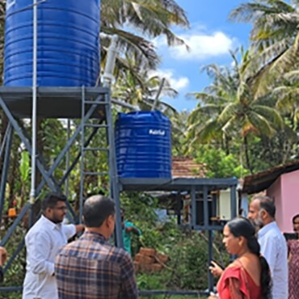

WATER & CLEAN ENERGYReliable water. Powered by the sun.
A community water system combines solar pumping, drinking water filtration and street lighting. The project included maintenance support from local student volunteers.
LOCAL COMMUNITIES. SHARED POSSIBILITIES.
We bring volunteers and communities across Kerala together to turn everyday challenges into lasting change.
Part of IEEE’s global community of
humanitarian technology volunteers.

01 / WHO WE ARE
Good technology begins with understanding the people who use it.
IEEE is a technical professional organisation dedicated to advancing technology for the benefit of humanity. Its Special Interest Group on Humanitarian Technology — SIGHT — connects volunteers with underserved communities to work on sustainable development.
IEEE Kerala Section SIGHT puts that purpose into practice locally, connecting students, engineers and community partners through field visits, hands-on projects and shared learning.
Explore the SIGHT mission ↗02 / OUR WORK
Water, energy, learning and inclusion.
Real needs guide the work we do.

WATER & CLEAN ENERGYA community water system combines solar pumping, drinking water filtration and street lighting. The project included maintenance support from local student volunteers.
Street lighting for a tribal colony in Muvattupuzha, supported by EPICS in IEEE.
Read the story ↗An after-school coding camp and makeathon connecting young people with design thinking and sustainable development.
Explore the programme ↗03 / HOW WE WORK
Lasting change is a shared effort.
We listen, work together and keep learning.
Spend time with communities. Learn about everyday needs, local knowledge and the challenges that matter to people.
Bring community partners, students and professionals together to develop practical technology suited to the local context.
Support local skills, share what we learn and consider how a solution can be used and maintained over time.
THE SIGHT HUB
A space for problems, ideas and learning.
The Kerala SIGHT Hub was created to connect humanitarian challenges with people who can help address them. That spirit of open exchange continues to guide our community.
Connect with the community ↗Understand community needs in water, energy, education, livelihoods and accessibility.
Share project experience and connect ideas with people who can put them into practice.
Grow technical and project skills through resources, hands-on learning and peer exchange.
Historical content on the previous SIGHT Hub website.
04 / LEARN & CONNECT
Build your understanding.
Find your people. Take the next step.
A FEW THINGS TO KNOW
SIGHT membership is free and open to everyone interested in using technology for humanitarian impact. Non-IEEE members are also welcome to participate in local SIGHT Groups. Read the membership FAQ ↗
Connect with the Kerala team to discuss student participation and community partnerships. IEEE also provides guidance on finding or starting a SIGHT Group affiliated with a Section or Student Branch.
Explore SIGHT Groups ↗SIGHT works with underserved communities on technology that addresses their needs and supports sustainable development. Community participation, local partnerships and long-term usefulness are central to the approach.
Yes. Community partnerships are central to SIGHT. Contact the Kerala team to discuss a local challenge, share community knowledge or explore how volunteers might support your work.
LET’S WORK TOGETHER
Whether you’re a college team, a volunteer or a community organisation, there’s a place for you in this work.
Connect with SIGHT Kerala ↗Reach our team on LinkedIn to explore volunteering, college partnerships or community collaboration.
Become a SIGHT member ↗